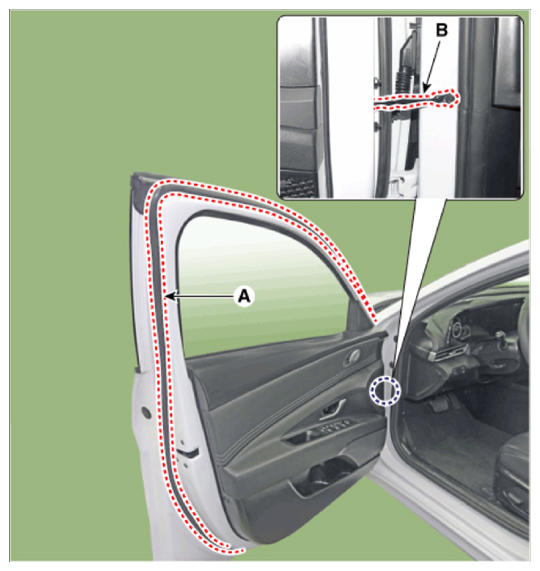

LEMON Manuals
: Even more car manuals for everyone: 1960-2025
Home
>>
Hyundai
>>
2022
>>
Elantra N Line, Standard Trans
>>
Repair and Diagnosis
>>
Body & Frame
>>
Exterior Body Panels
>>
Front Door Assembly (Except HEV)
>>
Front Door Side Weatherstrip
>>
Repair Procedures
>>
Replacement
>>
[Front door side weatherstrip]
[Front door side weatherstrip]
Loosen the front door checker (B) mounting bolt.
Tightening torque:
18.6 - 28.4 N.m (1.7 - 2.2 kgf.m, 13.7 - 21.0 lb-ft)
Detach the clips, then remove the front door side weatherstrip (A).

Courtesy of HYUNDAI MOTOR AMERICA
To install, reverse the removal procedure.
Information
Replace any damaged clips (or pin - type retainers).